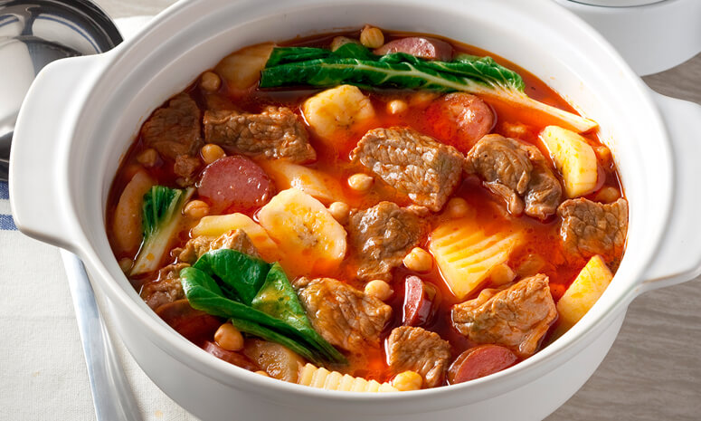

Beef Pochero Recipe

How to cook Filipino Beef Pochero
Here is another mouth watering version of Beef Pochero that I love to cook.
You can add other ingredients according to what you choose.
And I like the taste that the beef is not so overwhelming.
Ingredients:
- 2 lbs Beef Chuck or Short Ribs
- 1/2head cabbage quartered
- 1 bunch bok choy
- about 15 green beans
- 1 big size potato, cubed
- 2 medium size carrots
- 2 plantains, sliced
- 1 polka kielbasa sausage, sliced
- 2-3 tomatoes, diced
- 1 onion, diced
- 2 tablespoons whole pepper corn
- 1 tablespoon fish sauce
- 3 cloves garlic, minced
- 12 ounces tomato sauce
- 3-4cups water
- 1 medium can garbanzos
- 1 medium can green peas
- 4 tablespoons cooking oil
Steps:
- Heat oil in the pot and fry the plantain until color turns golden brown.
Once done, set the plantain aside.
Do the same with the potato and carrots until desired tenderness.
- Put the keilbasa sausage in the same pot and fry each side until it browns.
Remove and then set aside.
- Using the remaining oil (add more if needed),
sauté the garlic, onion, and tomato
- Add the beef once the onion and tomato softens.
Continue sauteeing until the exterior the beef turns
light brown.
- Add fish sauce, tomato sauce, and whole pepper corn. Stir.
- Pour the water. Let it boil.
Cover the pot and simmer until the meat gets tender.
(You can also use a pressure cooker to tenderize the meat faster)
- Add the fried sausage back into the pot together
with the fried plantain, potato and carrots.
Add the garbanzos and green peas. Simmer for minutes
- Add the cabbage and the green beans, continue cooking for 5 minutes
- Add the bok choy and turn off the heat.
Cover for about 5-10 minutes and
let the remaining heat cook the bok choy.
- Serve and enjoy!
Top Page
Return to Home Page